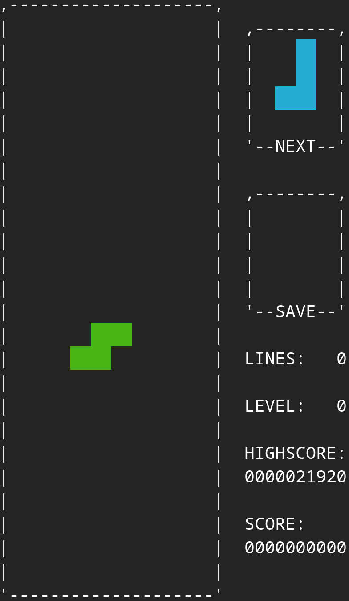
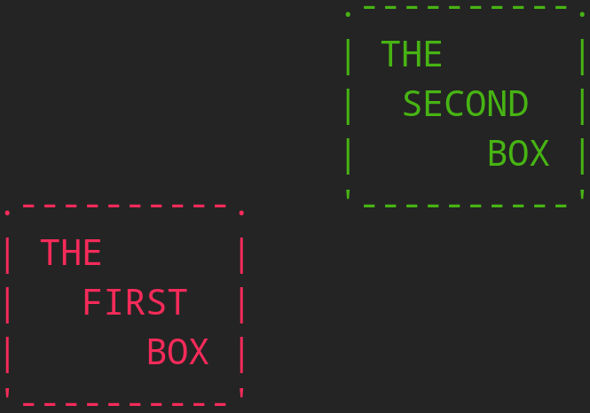

|
|
Making a simple Tetris game in the terminal #
When trying to learn how to code complex projects, it can be hard going from the simple farenheit.c example to a fully GPU rendered game. As so, and as I have done myself, I think the best intermediate project to attempt is a terminal-rendered game.
In this blog, I will build a simple terminal-rendered Tetris using ASCII characters and terminal escape sequences (for colors and such, we'll talk about them later). This project will be built from the ground up (no dependencies on libraries not preinstalled on basically every machine) to be as accessible as possible. You can find the finished game in this GitHub repository.
The main objective is to have fun: this is not a tutorial on efficient TUI application design, general software development or game design. My goal is to make this project as well documented as possible to help new C programmers have a better grasp of how to actually achieve such a project.
Contents #

1. A common base for terminal-rendered applications #
1.1 How to draw using a terminal #
The main idea behind drawing in the terminal is the same as when drawing ASCII-Art: we use the characters as lines and/or brightness values in a grid (like a grid of pixels) to build up larger shapes.
^ ^
/ \___/ \
__/ _ _ \__
=== ^ === ,--,
'-- --' / \
/ V \ | _/
| | | | | /
(,_(,,|,,)_,)-"
Cat in ASCII-ART (only for illustrative purposes)
. , : ! i # @
. , : ! i # @
. , : ! i # @
. , : ! i # @
Gradient made from ASCII characters, illustrating
how they can be used as brightness valuesThe large majority of terminals display text in a monospace font (meaning that each character is the same width, just like in the font I use for this website). Therefore, we can think of the terminal window as a grid of characters, each occupying a rectangle of roughly 2:1 proportions. Thanks to this consistency, we can draw shapes anywhere in the terminal window without worrying about distorsions due to varying character widths.
We can index the different characters based on which column and row they occupy, just like a pixel on a screen. If we imagine printing an image row by row in the terminal, then a row would be a '\n' terminated line (if we assume the terminal window is wide enough) and a column would be the character's position within this line :
printf(".----------.\n| JUST |\n| A |\n| BOX |\n'----------'\n");
// The above is equivalent to:
printf(
".----------.\n" //
"| JUST |\n" // In C, string litterals are automaticaly
"| A |\n" // concatenated if nothing separates them.
"| BOX |\n" // Therefore, these five lines form a single
"'----------'\n" // string litteral.
);
// Expected:
// .----------.
// | JUST |
// | A |
// | BOX |
// '----------'
//
// Character 'A' is at position (6;2), so on position 6 of line 2We have a random box, nice! However, if we want to draw anything else now it will have to be bellow this box as we can only print entire lines from top to bottom. This is crucial as it means we have to print things in a very specific order to achieve the result we want, and thus structure our code around this top-to-bottom printing logic.
(i) Alternatively, we could preallocate a buffer into which we would store every line and print the complete buffer at the end. Doing this gives us more flexibility with the disposition of our code but can become limiting when using escape sequences (introduced a bit later) as their character count is not necessarily fixed.
Here is an example displaying two boxes to show how we can work by line:
// This code prints two boxes similarily to the previous example. However, separating the lines like
// this allows us to index in which line we are (which may be useful when indexing an array for
// example).
for (int l = 0; l < 5; l++)
{
switch (l)
{
case 0: printf(".----------."); break;
case 1: printf("| THE |"); break;
case 2: printf("| FIRST |"); break;
case 3: printf("| BOX |"); break;
case 4: printf("'----------'"); break;
}
printf(" "); // Four spaces
switch (l)
{
case 0: printf(".----------."); break;
case 1: printf("| THE |"); break;
case 2: printf("| SECOND |"); break;
case 3: printf("| BOX |"); break;
case 4: printf("'----------'"); break;
}
printf("\n");
}
// Expected:
// .----------. .----------.
// | THE | | THE |
// | FIRST | | SECOND |
// | BOX | | BOX |
// '----------' '----------'Thinking about printing in this way grants us much better flexibility in how to arrange our rendering logic.
Now that we can draw what we want, we need a way to clear the terminal or move the cursor (the position within the terminal window from which the text will be printed, the blinking thingy) back to the top of the terminal window again in order to draw the next frame of our application. To achieve this and much more, we will use ANSI Escape Sequences which are a set of commands one can use to manipulate the terminal's appearence and behaviour.
The commands we will use take the form "\033[..." and are to be placed within the string outputed to the terminal. Indeed, \033 is an octal number (written in base 8) which equals to 27 in decimal. This number is called the escape code and is pretty much standard throughout terminals as the introduction to a terminal command (it is also defined as the escaped character '\e' in C). In our case, all commands will also have an opening square bracket [ as the second byte because we only manipulate the terminal appearence (these are called Control Sequence Introducer commands).
Specificaly, we will need:
-
"\033[nJ"to erase the screen, withneither 0 (erase from cursor position to end of screen), 1 (erase from cursor position to top or screen) or 2 (erase entire screen). -
"\033[n;mH"to move the cursor to rownand columnm. -
"\033[nm"to change the color (and other things) for the next print operations, withnan integer (the wikipedia page references all the possible values).
Using this, we can now make our boxes bounce up and down in two different colors (this program is also found at examples/moving_boxes.c in the project repo):
#include <stdio.h>
#include <math.h>
#include <unistd.h>
// Compile:
// cc -o moving_boxes moving_boxes.c -lm
int main()
{
printf("\033[2J"); // Clear screen
// This is a "for loop" so that we have a time reference
for (int frame_count = 0; ; ++frame_count)
{
// The bouncing will be achieved by offseting the "line 0" of each box by an oscillating
// value between 0 and 5 (because we work with a screen of 10 lines and a bo is 5 lines)
const int offset1 = 2.5 + 2.5 * sin(frame_count * 0.1);
const int offset2 = 2.5 - 2.5 * sin(frame_count * 0.1); // Out of phase by 180°
printf("\033[H"); // Reset cursor position (top-left is the default)
for (int l = 0; l < 10; l++) // We will work with 10 lines for the screen
{
printf("\033[31m"); // Set color to "red"
switch (l - offset1) // Move position of "line 0" by applying offset
{
case 0: printf(".----------."); break;
case 1: printf("| THE |"); break;
case 2: printf("| FIRST |"); break;
case 3: printf("| BOX |"); break;
case 4: printf("'----------'"); break;
default: printf(" "); break; // If we're not drawing a box, then we draw
// blank characters to keep the spacing intact for the next box
}
printf("\033[0m"); // Reset color (not necessary, but good practice when you don't know
// what comes next).
printf(" "); // Four spaces
printf("\033[32m"); // Set color to "green"
switch (l - offset2) // Same as the first box
{
case 0: printf(".----------."); break;
case 1: printf("| THE |"); break;
case 2: printf("| SECOND |"); break;
case 3: printf("| BOX |"); break;
case 4: printf("'----------'"); break;
default: printf(" "); break;
}
printf("\033[0m");
printf("\n"); // Finish the row by passing a newline character
}
usleep(1000*1000/30); // Just to slow down the execution (we set a target of 30 frames per second, or 30 FPS)
}
}This programs outputs the following (just imagine the boxes moving up and down, I don't know how to embed video yet):

(i) Technically, we could also use ANSI escape sequences to move the cursor to a specific coordinate using "\033[n;mH" as a replacement to printing line by line, but I prefer to limit my uses of escape sequences as, depending on the terminal (looking at you, Windows terminals), printing may be slow and reducing the number of times we have to jump around and redraw can become crucial. This constraint also applies to changing color, and in a sense extends to graphics rendering in general as the overdraw problem.
1.2 How to query user inputs #
Now let's say we wanted to change the color of the second box based on user input, how can we proceed?
This can be achieved in multiple ways, but the simplest is to listen to the standard input stream (stdin) and wait for the user to press a key:
int c = getchar(); // Retrieve a single character from stdin (like `scanf("%c", &c)`)
printf("Got %c (%d)\n", c, c); // Print the read character and its ASCII-code
Sadly, it is not that simple as the standard input (where the user types) is buffered by default, which means that a newline character has to be entered in order for getchar to return (so everytime the user writes something, they would have to also press enter for their input to be taken into account, meanwhile the program is put on pause (the thread is put to sleep)).
What we want is a function which exactly retrieves a character from the standard input as soon as it is written. Such a function exists on Windows in the library <conio.h> as _getch, but on Linux we have to write it ourselves... So I didn't write it myself and found this on StackOverflow:
#include <termios.h>
#include <unistd.h>
#include <stdio.h>
int getch(void) {
// credits: https://stackoverflow.com/questions/3276546/how-to-implement-getch-function-of-c-in-linux
struct termios oldattr, newattr;
tcgetattr( STDIN_FILENO, &oldattr );
newattr = oldattr;
newattr.c_lflag &= ~( ICANON | ECHO | ISIG ); // Here, we flip these flags, so we disable them
// ^ ^ ^
// | | Killing with ^C and ^Z
// | Printing inputs to stdout
// Canonical mode (buffered, waits for enter to be pressed)
tcsetattr( STDIN_FILENO, TCSANOW, &newattr );
int c = getchar(); // Like `getc(stdin)` but more adequate as we don't consider the standard
// input as a file in this case
tcsetattr( STDIN_FILENO, TCSANOW, &oldattr ); // Set back the old attributes so the terminal is
// unchanged after this function call
return c;
}
This works by changing the terminal I/O settings so that the standard input is no longer buffered for the duration of this function (this is why oldattr is queried, to put the terminal back to its initial state before the function is exited). As a bonus, we also make sure that ctrl+C does not kill the program directly so that we may add our own logic before really killing the program (for example, making sure to write some data to a file before exiting).
To finalize this function, we can use macro magic (basic #if .. #else ... #endif) to make our code compilable on both Windows and Linux:
#include <stdio.h>
#ifdef _WIN32
# include <conio.h>
# define getch _getch
#else
# include <termios.h>
# include <unistd.h>
int getch(void) {
// credits: https://stackoverflow.com/questions/3276546/how-to-implement-getch-function-of-c-in-linux
struct termios oldattr, newattr;
tcgetattr( STDIN_FILENO, &oldattr );
newattr = oldattr;
newattr.c_lflag &= ~( ICANON | ECHO | ISIG );
tcsetattr( STDIN_FILENO, TCSANOW, &newattr );
int c = getchar();
tcsetattr( STDIN_FILENO, TCSANOW, &oldattr );
return c;
}
#endif
Now that we can retrieve inputs as they come, we can start to analyse what they look like. For characters from 'a' to 'z', from 'A' to 'Z' as well as some punctuation and whitespaces like '\n', the getch function returns exactly their ASCII code (as these are all ASCII characters). For more complex inputs like left_arrow (which is not represented by a number in the ASCII standard), an escape sequence can occur. For the arrows, these sequences are:
-
"\033[A"forup_arrow. -
"\033[B"fordown_arrow. -
"\033[C"forright_arrow. -
"\033[D"forleft_arrow.
(i) Note that these are also the sequences for moving the cursor (position from which the text is printed in the terminal window) in these directions. This shows how the escape sequences can be used to dialogue with the terminal (for example, we can ask for the cursor position with "\033[6n" and the terminal will respond in the standard input with "\033[n;mH", that we know to be the sequence for moving the cursor to row n and column m).
These inputs are composed of multiple characters so we have to call getch three times to retrieve the complete input, which can make our code messy when we will start to link inputs to game logic. To account for that, I decided to create an enum with the non-alphanumerical inputs and a function to deal with the getch calls for me:
/// @brief Some non-alphanumerical inputs we might expect
typedef enum InputKey {
#ifdef _WIN32
INPUT_ENTER = '\r',
INPUT_BACKSPACE = '\b',
#else
INPUT_ENTER = '\n',
INPUT_BACKSPACE = 127,
#endif
INPUT_A_CTRL = 1,
INPUT_C_CTRL = 3,
INPUT_V_CTRL = 22,
INPUT_X_CTRL = 24,
INPUT_Z_CTRL = 26,
ESCAPE_CODE = 27,
__INPUT_NON_ASCII = 256, // This ensure no collisions with existing ASCII characters codes, as
// as the next entries will count up from 256:
INPUT_UP, // 257
INPUT_DOWN, // 258
INPUT_RIGHT, // 259
INPUT_LEFT, // 260
} input_key;
/// @brief Get the last pressed key
/// @return The pressed input_key
int inputGet() {
const int base = getch();
if (base != ESCAPE_CODE) return base;
const int expect_sqr_bracket = getch();
if (expect_sqr_bracket != '[') return 0;
const int c = getch();
switch (c) {
case 'A': return INPUT_UP;
case 'B': return INPUT_DOWN;
case 'C': return INPUT_RIGHT;
case 'D': return INPUT_LEFT;
default: return 0;
}
}
This function either returns an ASCII character or value from the aforementionned enum if it is recognized as such. In any other case, it returns 0 (so that it may be interpreted as false). Now that we have a single function to call, we can query the user input in a loop like so :
while (1)
{
int input = inputGet();
switch(input)
{
case 'a': {
// Action to realize for pressing 'a' without CTRL or MAJ pressed too
} break;
...
case INPUT_UP: {
// Action to realize for pressing up arrow without CTRL or MAJ pressed too
} break;
...
default: {
fprintf(stderr, "UNKNOWN INPUT %d\n", input);
} break;
}
}
(i) The getch function (on both Windows and Linux) is still blocking in the sense that it waits for the user to press a key before returning a value (aka. the calling thread is put to sleep and woken up by the user input). This means that we can't do inputs pulling (waiting on user inputs) in the same thread as the rest of the application (in our case, the game update and the rendering) with this method. An alternative would be to make the standard input non-blocking using fcntl(STDIN_FILENO, F_SETFL, fcntl(STDIN_FILENO, F_GETFL) | O_NONBLOCK) on Linux or use getch_nolock on Windows and just check for non-zero values.
In this project we will accomodate for the blocking nature of getch by calling it in a separate thread and store the pressed inputs using a global variable:
struct inputs
{
union { // Using a union allows us to iterate over all inputs in a loop in `inputs_update`
struct {
bool key_a: // The simple `a` key without CTRL or MAJ
bool key_up; // The simple up arrow key without CTRL or MAJ
};
bool inputs[2];
};
pthread_mutex_t mutex; // Because the data is shared between two threads, we need to resolve
// collisions when writting by using a mutex
} INPUTS = { // We use a global variable here as there will only ever be one source for user inputs
// and we never manipulate this variable directly (we always use functions which use a
// mutex)
.mutex = PTHREAD_MUTEX_INITIALIZER
};
// Shorthand for pthread_mutex_lock(&INPUTS.mutex) and pthread_mutex_unlock(&INPUTS.mutex)
void inputs_mutex(bool lock)
{
(lock ? pthread_mutex_lock : pthread_mutex_unlock)(&INPUTS.mutex);
}
// Function executed in another thread to get user inputs, passed to `pthread_create`
void *inputs_thread_func(void *_)
{
while (1)
{
int key = inputGet(); // The infamous blocking function
inputs_mutex(true);
switch (key) {
case 'a': INPUTS.key_a = true; break;
case INPUT_UP: INPUTS.key_up = true; break;
default: break;
}
inputs_mutex(false);
}
}
// Function to be called once per frame which resets the inputs to not being pressed
void update_inputs()
{
inputs_mutex(true);
for (int i = 0; i < 2; ++i) INPUTS.inputs[i] = false;
inputs_mutex(false);
}
int main()
{
// Initialization code ...
pthread_t inputs_thread;
pthread_create(&inputs_thread, NULL, inputs_thread_func, NULL);
while (1)
{
// Logic for updating the game, rendering...
update_inputs(); // Last thing in the loop, we reset the input so that it may be updated
// again during the sleep
sleep(1.0 / 30.0); // Sleep to set target FPS to 30 (let's assume `sleep` takes in a float
// for now, we will redefine it as so later anyways)
}
}2. Architecture of the project #
Now that we have a way to display information and a way to acquire user input, we're all set... Or are we ? Queue in Moon Men by Jake Chudnow... Yeah we basicaly are, but let's organize everything so that we know how our final project's source code will look like.
We are dealing with three main sections:
-
Game logic: where the state of the application is changed (in our case, where the game state is updated).
-
Rendering: where the state of the application is converted to be displayed (in our case, the game of tetris in the terminal window)
-
Inputs processing: where the user inputs are captured to be used by the application.
We know that we have to separate the inputs processing in a separate thread, but game logic and rendering don't create the same kind of dependency so they can be executed sequencialy in the same thread, which will be the main thread (the one running the main function). Because the inputs data is very much independant from the rest of the program's data, and because the input thread only manipulates the input data, we are safe to shove everything related to game logic and rendering inside of a global variable to be accessed from any function (we could pass it as an argument everytime but why bother when there is no benefit?).
Therefore, here is the final program's structure:
static struct data
{
struct game_data { ... } GAME; // All the global game state
struct rendering_data { ... } RENDERING; // All the global render state
struct inputs_data { ... } INPUTS; // All the global inputs state (as previously seen)
} DATA = {
.INPUTS.mutex = PTHREAD_MUTEX_INITIALIZER
// ...
};
int main(int argc, char **argv)
{
// Initialization code ...
initialize_rendering_logic();
initialize_gameplay_logic();
initialize_inputs_logic();
// Start inputs thread
pthread_t inputs_thread;
pthread_create(&inputs_thread, NULL, inputs_thread_func, NULL);
// Enter main loop
while (1)
{
update_game();
render();
update_inputs();
sleep(1.0 / 30.0); // 30 FPS
}
}/!\ WORK IN PROGRESS /!\
This section will continue to be worked on
3. Practical example: The game of Tetris #
3.1 Defining the scope for the gameplay #
Let's define what we want our Tetris implementation to achieve in terms of functionnality so that we know what we are working towards.
/!\ DISCLAIMER: I'M NOT A TETRIS PLAYER AND HAVE MADE THIS CLONE WITHOUT REALLY RESEARCHING HOW THE GAMES WORK! I'M ONLY DOING THIS FOR FUN! /!\
The Tetris playing field is a vertical grid of tiles which can either be empty or contain a block. When part of the grid, these blocks can't be modified except when an horizontal line is full, resulting in a line clear. In this case, the line's blocks are removed and all of the blocks above the line are lowered by exactly 1 tile. If multiple lines are set to be cleared at once, then we can consider that each line is cleared one after the other (and thus the blocks above are lowered once per line underneath them). Clearing lines increases the score (based on the current level and the number of lines cleared at once) and, when a threshold is met, the level.
The player can interact with the playing field by manipulating a piece (we'll call it the current piece) which has a position, an orientation (in multiples of 90°) and a shape. The shape is one of the seven tetrominos (arrangement of four adjacent blocks).
The current piece cannot be moved outside of the playing field (each block of the piece's shape must be within the grid's boundary) and cannot overlapp any block already present in the grid (no block from the piece's shape can be in the same position as a block from the playing field).
If the current piece cannot be moved down anymore then it is integrated to the playing field (each block from the current piece becomes a block of the playin field) and a random tetromino is chosen to be the new current piece.
If the current piece can exist in its current position, then it is said to be in a legal position.
During a game update, the player can choose to:
-
move the current piece left by one tile.
-
move the current piece right by one tile.
-
move the current piece down by one tile.
-
snap down the piece to the lowest legal position.
-
rotate clockwise the current piece by 90°.
-
rotate counter-clockwise the current piece by 90°.
In addition, the piece falls down at a constant rate (which increases as the level goes up) which can be assimilated to gravity.
If any of the actions above results in an illegal position, then they are not applied to the piece.
Appart from moving the current piece, the player can also choose to save it in a dedicated slot to be reused later and continue with the last saved piece (if one was previously saved). The player can only save once per placed piece to avoid stalling the piece by repeatedly saving.
TETROMINOS:
.-L-PIECE---. .-RL-PIECE--. .-S-PIECE---. .-RS-PIECE--.
| . . # . | | . . # . | | . . . . | | . . . . |
| . . # . | | . . # . | | . . # # | | . # # . |
| . . # # | | . # # . | | . # # . | | . . # # |
| . . . . | | . . . . | | . . . . | | . . . . |
'-----------' '-----------' '-----------' '-----------'
.-T-PIECE---. .-SQUARE----. .-LONG-BAR--.
| . . . . | | . . . . | | . . # . |
| . # # # | | . # # . | | . . # . |
| . . # . | | . # # . | | . . # . |
| . . . . | | . . . . | | . . # . |
'-----------' '-----------' '-----------'3.2 Representing the game state #
In tetris we play with tetrominos (arangement of four adjacent blocks), so let's first define what is the tetromino within our program. We know that it has a shape made from four blocks, a color and a number of possible orientations corresponding to the number of 90° rotations you need to apply to the shape before it looks indentical to its default orientation (for example, an L-piece needs four rotations, an S-piece needs two and the square-piece needs only one):
L-piece (4 orientations):
.-0.--------. .-1.--------. .-2.--------. .-3.--------. .-4=0.------.
| . . # . | | . . . # | | . # # . | | . . . . | | . . # . |
| . . # . | -> | . # # # | -> | . . # . | -> | . # # # | -> | . . # . |
| . . # # | | . . . . | | . . # . | | . # . . | | . . # # |
| . . . . | | . . . . | | . . . . | | . . . . | | . . . . |
'-----------' '-----------' '-----------' '-----------' '-----------'
S-piece (2 orientations):
.-0.--------. .-1.--------. .-2=0.------.
| . . . . | | . . # . | | . . . . |
| . . # # | -> | . . # # | -> | . . # # |
| . # # . | | . . . # | | . # # . |
| . . . . | | . . . . | | . . . . |
'-----------' '-----------' '-----------'
square-piece (1 orientation):
.-0.--------. .-1=0.------.
| . . . . | | . . . . |
| . # # . | -> | . # # . |
| . # # . | | . # # . |
| . . . . | | . . . . |
'-----------' '-----------'
The piece's shape could be represented in a number of ways, but in this blog we will represent the it as a 4x4 array of bool where all values are false except for four which correspond tp the blocks:
typedef struct tetromino
{
int orientations;
char color;
bool shape[4*4];
} tetromino;
static const tetromino TETROMINOS[] = {
{ // SQUARE
.orientations = 1,
.color = 103, // The color corresponds the 'x' in the escape sequence "\033[xm"
.shape = {
0, 0, 0, 0,
0, 1, 1, 0,
0, 1, 1, 0,
0, 0, 0, 0,
}
},
{ // SQUIGGLY_PIECE
.orientations = 2,
.color = 42,
.shape = {
0, 0, 0, 0,
0, 0, 1, 1,
0, 1, 1, 0,
0, 0, 0, 0,
}
},
{ // REVERSE_SQUIGGLY_PIECE
.orientations = 2,
.color = 41,
.shape = {
0, 0, 0, 0,
0, 1, 1, 0,
0, 0, 1, 1,
0, 0, 0, 0,
}
},
{ // L_PIECE
.orientations = 4,
.color = 43,
.shape = {
0, 1, 0, 0,
0, 1, 0, 0,
0, 1, 1, 0,
0, 0, 0, 0,
}
},
{ // REVERSE_L_PIECE
.orientations = 4,
.color = 44,
.shape = {
0, 0, 1, 0,
0, 0, 1, 0,
0, 1, 1, 0,
0, 0, 0, 0,
}
},
{ // T_PIECE
.orientations = 4,
.color = 45,
.shape = {
0, 0, 0, 0,
1, 1, 1, 0,
0, 1, 0, 0,
0, 0, 0, 0,
}
},
{ // BAR_PIECE
.orientations = 2,
.color = 46,
.shape = {
0, 1, 0, 0,
0, 1, 0, 0,
0, 1, 0, 0,
0, 1, 0, 0,
}
}
};
Now that we have pieces, let's also define the playing area in which they'll fall. We'll make the playing area a 10x24 grid which will be occupied by either a block or an abscence of a block. This could be achieved with an array of bool, but to prepare for the rendering step we will use an array of char in which a block will be represented by its color (which is always non-zero) and the absence of a block by the value 0:
#define GRID_WIDTH 10
#define GRID_HEIGHT 24
typedef char grid[GRID_WIDTH * GRID_HEIGHT]; // So the type `grid` in an array of 240 `char`
To hold the entire game state, let's introduce the DATA structure from part 2 (but renamed TETRIS) and fill in the TETRIS.GAME structure.
The current piece needs to retain information about its position and orientation within the grid and which tetromino it is. We can group this in a sub structure called current.
In addition to the current piece, we also need to keep track of the next piece and the saved piece. These don't have positionnal information associated with them, only a piece type. In addition, an already_saved_piece flag is needed to make sure a piece is saved only once per placed piece.
To apply gravity to the current piece, we also need to keep track of the target velocity and a timer.Furthermore, we need to keep track of player statistics like the score, the total_lines_cleared or wether the game is over:
static struct tetris
{
struct game
{
bool already_saved_piece; // Wether the current piece was previously in the "saved"
// slot, in which case we disable saving to avoid stalling
const tetromino *saved_piece; // The piece stored in the "saved" slot
const tetromino *next_piece; // The piece stored in the "next" slot
struct current // Structure storing the state of the currently playing piece
{
const tetromino *piece; // Pointer in the `TETROMINOS` array
int x, y; // Position of (2,2) shape's block in the grid (center rotation)
int rotation; // Rotation (multiple of 90°) applied to the piece
} current;
grid grid; // The playing-field grid
int level; // The current level
int level_lines_cleared; // The number of lines cleared within this level
int total_lines_cleared; // The total number of lines cleared since the game's start
int score; // The current score
int fall_time, fall_frame; // Timers for applying gravity to the current piece
bool over; // Wether the game has been lost (aka. game over)
} GAME;
struct render { ... } RENDER;
struct inputs { ... } INPUTS;
} TETRIS;3.3 Defining the logic #
The structures defined, we can now write logic on TETRIS.GAME to:
-
Select a
random_tetromino, aka. return a random tetromino from theTETROMINOarray. -
reset_game, aka. reset the state ofTETRIS.GAMEto start a new game. -
Check wether
is_move_legal, aka. wether a piece placement is contained within the grid (except for the top side to allow pieces to fall from above the playing field) and it doesn't overlapp already placed blocks within the grid. -
place_current_piece_in_grid, aka. copy the blocks of the current piece into the grid.
// Return a random tetromino from the `TETROMINOS` array
const tetromino *random_tetromino()
{
// This function could be improved to make repeat pieces impossible or better distribute the
// pieces, but a simple uniform-ish distribution is a good start
return &TETROMINOS[rand() % 7]; // There are seven tetrominos
}
void reset_game()
{
memset(&TETRIS.GAME, 0, sizeof(TETRIS.GAME));
TETRIS.GAME.level = TETRIS.level_at_reset;
TETRIS.GAME.fall_time = 16;
TETRIS.GAME.next_piece = random_tetromino();
}
// Check if local position (x, y) is in current piece rotated by (rot)
// x, y and rot must be between 0 and 3, both inclusive
bool is_pos_in_current_piece_rotated(int rot, int x, int y)
{
switch (rot)
{
case 0: return TETRIS.GAME.current.piece->shape[(x - 0) + (y - 0) * 4];
case 1: return TETRIS.GAME.current.piece->shape[(3 - y) + (x - 0) * 4];
case 2: return TETRIS.GAME.current.piece->shape[(3 - x) + (3 - y) * 4];
case 3: return TETRIS.GAME.current.piece->shape[(y - 0) + (3 - x) * 4];
default: return false;
}
}
// Check wether applying the transformation (nrot, nx, ny) to the current piece results in a legal position (aka. not out of screen and not on top of already placed pieces)
bool is_move_legal(int nrot, int nx, int ny)
{
for (int y = ny - 2, local_y = 0; y < ny + 2; ++y, ++local_y)
for (int x = nx - 2, local_x = 0; x < nx + 2; ++x, ++local_x) {
if (!is_pos_in_current_piece_rotated(nrot, local_x, local_y))
continue; // If not [tetromino block] then [continue to next block]
if (x < 0 || x >= GRID_WIDTH)
return false; // If tetromino block is [outside of screen width] then [collision has
// happened], the move is illegal
if (y < 0)
continue; // If tetromino block is [above screen] then [continue to next block]
if (y >= GRID_HEIGHT || TETRIS.GAME.grid[x + y * GRID_WIDTH])
return false; // If tetromino block is [bellow screen] or [on top of already placed
// block] then [collision has happened], the move is illegal
}
return true; // If no tetrominos block was ever [outside of screen] or [on top of already
// placed block] then [no collision happened], the move is legal
}
// Place the blocks from the current piece on the input grid
// current piece is expected to be in a legal placement
void place_current_piece_in_grid(grid grid)
{
const int rotation = TETRIS.GAME.current.rotation;
const char color = TETRIS.GAME.current.piece->color;
for (int y = TETRIS.GAME.current.y - 2, local_y = 0; y < TETRIS.GAME.current.y + 2; ++y, ++local_y)
for (int x = TETRIS.GAME.current.x - 2, local_x = 0; x < TETRIS.GAME.current.x + 2; ++x, ++local_x)
{
if (is_pos_in_current_piece_rotated(rotation, local_x, local_y))
grid[x + y * GRID_WIDTH] = color;
}
}Thanks to these functions, we can now build the main update function for the game. The approch presented bellow relies on checking wether a newly computed position results in a legal position or not. By checking this condition with increasignly more restrictive movement until no movement is allowed, we can detect a loosing condition:
// Update the game for a given set of inputs
void update_game(int horizontal, int vertical, int rotation, bool save_piece, bool snap_down)
{
++TETRIS.GAME.fall_frame;
// When fall_frame >= fall_time, we apply 'gravity' to the piece (which speeds up the fall on harder levels).
// This results in downwards motion regardless of wether the player pressed "down"
if (TETRIS.GAME.fall_frame >= TETRIS.GAME.fall_time) {
TETRIS.GAME.fall_frame = 0;
vertical = 1;
}
// If there is no "current piece", it means we need to pick from the "next" slot (happens only on frame 0)
if (!TETRIS.GAME.current.piece)
goto NEXT; // The `goto` instruction in C allows the code execution to jump directly to a
// `label` (in this case, the label is `NEXT:`)
// Saving a piece may happen only once per placed tetromino to avoid stalling by saving in a loop
if (save_piece && !TETRIS.GAME.already_saved_piece)
{
TETRIS.GAME.already_saved_piece = true;
const tetromino *tmp = TETRIS.GAME.current.piece;
TETRIS.GAME.current.piece = TETRIS.GAME.saved_piece ? TETRIS.GAME.saved_piece : TETRIS.GAME.next_piece; // If no pieces were already saved, then swap with next piece, else swap with saved piece
TETRIS.GAME.saved_piece = tmp;
goto RESET;
}
// Snapping the piece down means lowering the piece until it cannot be lowered anymore
if (snap_down)
{
while (is_move_legal(TETRIS.GAME.current.rotation, TETRIS.GAME.current.x, TETRIS.GAME.current.y + 1)) ++TETRIS.GAME.current.y;
goto CHECK_PLACE; // We can directly jump to this test because snapping down should not
// impart any horizontal movement and takes precedence over down input
// and gravity
}
// Transformation to try to apply to the current piece
int nx = TETRIS.GAME.current.x + horizontal, ny = TETRIS.GAME.current.y + vertical;
int nrot = (TETRIS.GAME.current.rotation + rotation + 4) % TETRIS.GAME.current.piece->orientations;
// Check if piece collides with level after applying rotation and translation
if (is_move_legal(nrot, nx, ny)) {
TETRIS.GAME.current.rotation = nrot;
TETRIS.GAME.current.x = nx;
TETRIS.GAME.current.y = ny;
return;
}
// If applying rotation failed, try only applying translation
if (is_move_legal(TETRIS.GAME.current.rotation, nx, ny)) {
TETRIS.GAME.current.x = nx;
TETRIS.GAME.current.y = ny;
return;
}
// If applying translation failed, try only applying vertical translation
if (is_move_legal(TETRIS.GAME.current.rotation, TETRIS.GAME.current.x, ny)) {
TETRIS.GAME.current.y = ny;
return;
}
CHECK_PLACE:
// If applying any transformation failed, check if the piece cannot be placed
if (!is_move_legal(TETRIS.GAME.current.rotation, TETRIS.GAME.current.x, TETRIS.GAME.current.y)) {
// Should only happen when there is no more space to place a tetromino. Therefore, this constitutes a gameover condition
TETRIS.GAME.over = true;
return;
}
///// At this point, we know that the piece has to be placed in the grid
// Place the piece in the level grid
place_current_piece_in_grid(TETRIS.GAME.grid);
// Clear any lines that might have been formed by this piece
// We go bottom up to allow higher lines to "fall" where removed lines once were
int lines_cleared = 0;
for (int y = TETRIS.GAME.current.y - 1; y < TETRIS.GAME.current.y + 3; ++y) {
int count = 0;
for (int x = 0; x < GRID_WIDTH; ++x) count += (TETRIS.GAME.grid[x + GRID_WIDTH * y] > 0);
if (count == GRID_WIDTH) {
++lines_cleared;
if (y) memmove(TETRIS.GAME.grid + GRID_WIDTH, TETRIS.GAME.grid, y * GRID_WIDTH * sizeof(TETRIS.GAME.grid[0]));
}
}
TETRIS.GAME.level_lines_cleared += lines_cleared;
TETRIS.GAME.total_lines_cleared += lines_cleared;
// Increase score for lines cleared based on current level
switch (lines_cleared) {
case 1: TETRIS.GAME.score += 40 * TETRIS.GAME.level; break;
case 2: TETRIS.GAME.score += 100 * TETRIS.GAME.level; break;
case 3: TETRIS.GAME.score += 300 * TETRIS.GAME.level; break;
case 4: TETRIS.GAME.score += 1200 * TETRIS.GAME.level; break;
default: break;
}
// If we have a new highscore, update it
if (TETRIS.highscore < TETRIS.GAME.score) TETRIS.highscore = TETRIS.GAME.score;
// Finaly, check if we have cleared enough lines to go to the next level
if (TETRIS.GAME.level_lines_cleared >= 10) {
++TETRIS.GAME.level;
TETRIS.GAME.level_lines_cleared %= 10;
// And change the speed at which the blocks fall depending on the answer
if (TETRIS.GAME.level < 13) TETRIS.GAME.fall_time = 16;
else if (TETRIS.GAME.level < 16) TETRIS.GAME.fall_time = 8;
else if (TETRIS.GAME.level < 19) TETRIS.GAME.fall_time = 4;
else if (TETRIS.GAME.level < 29) TETRIS.GAME.fall_time = 2;
else TETRIS.GAME.fall_time = 1;
}
NEXT:
TETRIS.GAME.current.piece = TETRIS.GAME.next_piece;
TETRIS.GAME.next_piece = random_tetromino(); // Returns a random pointer in `TETROMINOS` array
TETRIS.GAME.already_saved_piece = false;
RESET:
TETRIS.GAME.current.rotation = 0;
TETRIS.GAME.current.x = GRID_WIDTH / 2 - 1;
TETRIS.GAME.current.y = 1;
TETRIS.GAME.fall_frame = 0; // Makes it just a smidge more consistent
}3.4 Rendering the game #
Our game needs to display multiple things to the user. We need to display the playing field as a grid of colored squares, and include the current piece when rendering it as if it were part of the grid (so that it looks like the current piece is part of the grid). In addition, we need the user to be aware of which piece comes next and which piece they have saved (if any). Finally, game statistics like the current level, score, highscore or the number of lines cleared should also appear.
Once again, you can explore your creativity here. I'll choose to display everything in the following layout:
.--------------------.
| | .--------.
| | | |
| | | *NEXT* |
| | | *PIECE*|
| | | |
| | '--NEXT--'
| |
| | .--------.
| | | |
| | | *SAVED*|
| | | *PIECE*|
| *PLAYING FIELD* | | |
| | '--SAVE--'
| |
| | LINES: 0
| |
| | LEVEL: 0
| |
| | HIGHSCORE:
| | 0000000000
| |
| | SCORE:
| | 0000000000
| |
'--------------------'
Where the text in *asteriscs* corresponds to colored blocks representing the playing field (with the current piece inserted within), the saved piece (just blank if nothing) and the next piece.
To simplify the rendering of the playing area, we'll copy the playing field's grid and draw the current piece into it:
static struct tetris
{
struct game { ... } GAME;
struct render
{
grid grid; // Copy of TETRIS.GAME.grid in which we'll also insert TETRIS.GAME.current using `place_current_piece_in_grid(TETRIS.RENDER.grid)`
} RENDER;
struct inputs { ... } INPUTS;
} TETRIS;
In addition, I'll define some wrapper functions to define the drawing logic (which is not strictly necessary but which synthaxicaly unifies fputc, fputs and fprintf under a common name to better signal what they achieve in this context):
void drawf(const char *fmt, ...)
{
va_list args;
va_start(args, fmt);
vfprintf(stdout, fmt, args);
va_end(args);
}
void draws(const char *str)
{
fputs(str, stdout);
}
void drawc(char c)
{
fputc(c, stdout);
}
void drawnc(int count, char c)
{
for (int i = 0; i < count; ++i) fputc(c, stdout);
}
(i) Defining functions which abstract away the underlying functionnality (in the sense that they hide the implementation details to appear more generic) is useful when writting code which could be implemented in a multitude of ways. For example, if I wanted to render everything to a file for debugging, it would be easy to only modify the draw{...} functions instead of having to go through the entire rendering logic.
To achieve the wanted output, we will print the result line by line using the switch method presented in the examples of part 1.1. Each line, we will first render the playing field by indexing into the TETRIS.RENDER.grid and then, depending on the current line, render either the next piece box, the saved piece box or the game statistics (score, lines, etc.):
// Render the game output to the screen
// We make the assumption that there is a currently selected piece anytime this function is called
void render()
{
///// First, we build the grid which will be render on screen (aka. the already placed blocks + the current piece)
memcpy(TETRIS.RENDER.grid, TETRIS.GAME.grid, sizeof(grid));
place_current_piece_in_grid(TETRIS.RENDER.grid);
///// Then we draw the entire UI (aka. main game area + the widgets on the left, like score or 'next piece' box)
draws("\033[1H"); // Move cursor to top left of screen
drawc('.'); drawnc(GRID_WIDTH * 2, '-'); draws(".\n"); // Draw top line
int col = 0;
for (int j = 0; j < GRID_HEIGHT; j++) {
col = 0;
// Draw main grid line: white '|', [ colored grid blocks ], white '|'
draws("\033[0m|");
for (int i = 0; i < GRID_WIDTH; i++) {
if (TETRIS.RENDER.grid[i + GRID_WIDTH * j] != col) drawf("\033[%dm ", col = TETRIS.RENDER.grid[i + GRID_WIDTH * j]);
else draws(" ");
}
draws("\033[0m|");
// Switch on the line number to know what to draw
switch (j)
{
// Draw "next piece" box
case 0: draws(" .--------."); break;
case 1: case 2: case 3: case 4: {
draws(" |");
for (int i = 0; i < 4; ++i) drawf("\033[%dm ", TETRIS.GAME.next_piece->shape[i + (j - 1) * 4] * TETRIS.GAME.next_piece->color);
draws("\033[0m|");
} break;
case 5: draws(" '--NEXT--'"); break;
// Draw "saved piece" box
case 7: draws(" .--------."); break;
case 8: case 9: case 10: case 11: {
drawf(" |");
// We might not have a saved piece, in which case we don't want to draw anything in
// the box
if (TETRIS.GAME.saved_piece) for (int i = 0; i < 4; ++i) drawf("\033[%dm ", TETRIS.GAME.saved_piece->shape[i + (j - 8) * 4] * TETRIS.GAME.saved_piece->color);
else draws(" ");
draws("\033[0m|");
} break;
case 12: draws(" '--SAVE--'"); break;
case 14: drawf(" LINES: % 3d", TETRIS.GAME.total_lines_cleared); break;
case 16: drawf(" LEVEL: % 3d", TETRIS.GAME.total_lines_cleared); break;
case 18: draws(" HIGHSCORE:"); break;
case 19: drawf(" %010d", TETRIS.highscore); break;
case 21: draws(" SCORE:"); break;
case 22: drawf(" %010d", TETRIS.GAME.score); break;
default: break;
}
drawc('\n');
}
drawc('\''); drawnc(GRID_WIDTH * 2, '-'); drawc('\''); // Draw bottom line
}3.5 Combining everything #
Let's combine everything we've written so far to make the final executable!
First, let's extend the part 1.2 inputs thread function to query every keyboard input we need:
void *inputs_thread_func(void *_)
{
while (1)
{
int key = get_input();
inputs_mutex(true);
switch (key) {
// Move left one tile
case 'q': TETRIS.INPUTS.left = true; break;
// Move right one tile
case 'd': TETRIS.INPUTS.right = true; break;
// Move down one tile
case 's': TETRIS.INPUTS.down = true; break;
// Save piece
case 'a': TETRIS.INPUTS.save = true; break;
// Rotate clockwise
case INPUT_RIGHT: TETRIS.INPUTS.rotate_counter = true; break;
// Rotate counter-clockwise
case INPUT_LEFT: TETRIS.INPUTS.rotate_clockwise = true; break;
// Snap down to lowest legal position
case INPUT_DOWN: case 'S': // [SHIFT + s]
TETRIS.INPUTS.snap_down = true; break;
// Select/advance in menu
case INPUT_ENTER: TETRIS.INPUTS.select = true; break;
// Exit the program
case INPUT_C_CTRL: exit(0);
default: break;
}
inputs_mutex(false);
}
}Next, let's add a title-screen to the game to explain the controls to the user. To do that, we'll display the controls and the game's title when the program is launched:
_____ _____ _____ ____ _____ ______
|__ __| | ____| |__ __| | __ \ |__ __| / ___ \
| | | |__ | | | |_\ | | | \ \___
| | | __| | | | _ < | | '--.. \
| | | |___ | | | | \ \ _| |_ _____\ |
|_| |_____| |_| |_| \_\ |_____| \_____/
[Q] [D] : Move piece left or right
[S] : Move piece down
[↓] : Snap piece down instantaniously
[←] [→] : Rotate piece clockwise or counter-clockwise
[A] : Save piece
[^C] : Force quit game
< Press ENTER to start game >...and wait for the user to press enter to start the actual game:
// Wait for ENTER key to be pressed
void wait_enter()
{
while (1)
{
inputs_update();
sleep(1.0 / 15.0);
if (TETRIS.INPUTS.select) break;
}
}Afterwards, we will launch the actual game by:
-
Resetting the game state to start a new game.
printf("\033[2J"); // Clear screen reset_game(); -
Running the game loop until the game is over:
while (!TETRIS.GAME.over) { // Read user inputs inputs_mutex(true); const int ud = (int)TETRIS.INPUTS.down; const int lr = (int)TETRIS.INPUTS.right - TETRIS.INPUTS.left; const int rot = (int)TETRIS.INPUTS.rotate_clockwise - TETRIS.INPUTS.rotate_counter; const bool save = TETRIS.INPUTS.save; const bool snap = TETRIS.INPUTS.snap_down; inputs_mutex(false); // Update game, render game and update inputs update_game(lr, ud, rot, save, snap); render(); inputs_update(); sleep(1/60.0); // We want to target around 60 FPS, we guestimate that a negligeable part of the // frame time is spent on processing } -
When the game is over, displaying
"GAME OVER"and waitting for the user to press enter to loop back to the title-screen.// Display "GAME OVER" in the center of the playing field and // "< Press ENTER to continue >" at the bottom of the screen printf("\033[%d;%dHGAME OVER\033[100;0H< Press ENTER to continue >", 1 + GRID_HEIGHT / 2, 2 + GRID_WIDTH - (int)sizeof("GAME OVER") / 2); wait_enter();
Combining all of the above together yields the main loop:
int main(int argc, char **argv)
{
// Initialise program
...
while (1) // Main loop
{
// Display title-screen
printf(
"\033[2J" // Clear terminal window
"\033[1H" // Reset cursor position
" _____ _____ _____ ____ _____ ______ \n"
" |__ __| | ____| |__ __| | __ \\ |__ __| / ___ \\ \n"
" | | | |__ | | | |_\\ | | | \\ \\___ \n"
" | | | __| | | | _ < | | '--.. \\ \n"
" | | | |___ | | | | \\ \\ _| |_ _____\\ |\n"
" |_| |_____| |_| |_| \\_\\ |_____| \\_____/ \n"
"\n"
" [Q] [D] : Move piece left or right\n"
" [S] : Move piece down\n"
" [↓] : Snap piece down instantaniously\n"
" [←] [→] : Rotate piece clockwise or counter-clockwise\n"
" [A] : Save piece\n"
" [^C] : Force quit game\n"
"\n"
"< Press ENTER to start game >\n"
);
wait_enter();
// Start game
printf("\033[2J"); // Clear screen
reset_game();
while (!TETRIS.GAME.over)
{
// Read user inputs
inputs_mutex(true);
const int ud = (int)TETRIS.INPUTS.down;
const int lr = (int)TETRIS.INPUTS.right - TETRIS.INPUTS.left;
const int rot = (int)TETRIS.INPUTS.rotate_clockwise - TETRIS.INPUTS.rotate_counter;
const bool save = TETRIS.INPUTS.save;
const bool snap = TETRIS.INPUTS.snap_down;
inputs_mutex(false);
// Update game, render game and update inputs
update_game(lr, ud, rot, save, snap);
render();
inputs_update();
sleep(1/60.0); // We want to target around 60 FPS, we guestimate that a negligeable
// part of the frame time is spent on processing
}
// Display "GAME OVER" in the center of the playing field and
// "< Press ENTER to continue >" at the bottom of the screen
printf("\033[%d;%dHGAME OVER\033[100;0H< Press ENTER to continue >",
1 + GRID_HEIGHT / 2, 2 + GRID_WIDTH - (int)sizeof("GAME OVER") / 2);
wait_enter();
}
}
As a bonus, we'll make sure to save the highscore between runs of the program by keeping it into an external file. To achieve this, we'll define a load_highscore function which will read the highscore from the file into the TETRIS.highscore variable and a save_highscore function which will write it back into the file. To ensure that it is written when exiting the program, we'll pass it as a callback to atexit:
// Load the highscore from the save file
void load_highscore()
{
FILE* f = fopen("highscore.txt", "r");
if (f) {
fscanf(f, "%d", &TETRIS.highscore);
fclose(f);
}
}
// Save the highscore to the save file
void save_highscore()
{
FILE *f = fopen("highscore.txt", "w");
if (f) {
fprintf(f, "%d", TETRIS.highscore);
fclose(f);
}
// This function will be called "at exit", which means that it is the last thing which will be
// exectuted before the program terminates. Therfore, we have to make sure that we reset the
// terminal settings here (color, show cursor).
puts("\033[31m[EXIT]\033[?25h\033[0m\n");
}
(i) The atexit function (found in <stdlib.h>) allows users to register a function to be called when the exit function is called or when main returns (they are equivalent). This means that every functions passed to atexit will be executed just before the program terminates, allowing us to ensure that the highscore is always saved before exiting the program. This is also why we reset the terminal state in this function.
Finally, we'll combine everything to make the main function:
int main(int argc, char **argv)
{
if (argc >= 2) TETRIS.level_at_reset = atoi(argv[1]);
if (TETRIS.level_at_reset <= 0) TETRIS.level_at_reset = 1;
srand(time(NULL)); // Make sure the game doesn't play out the same everytime the app is launched
load_highscore();
atexit(save_highscore); // Make sure the highscore is saved when the program closes
// Start the thread which queries user inputs
pthread_t inputs_thread;
pthread_create(&inputs_thread, NULL, inputs_thread_func, NULL);
puts("\033[?25l"); // Hide cursor
while (1)
{
printf(
"\033[2J" // Clear terminal window
"\033[1H" // Reset cursor position
" _____ _____ _____ ____ _____ ______ \n"
" |__ __| | ____| |__ __| | __ \\ |__ __| / ___ \\ \n"
" | | | |__ | | | |_\\ | | | \\ \\___ \n"
" | | | __| | | | _ < | | '--.. \\ \n"
" | | | |___ | | | | \\ \\ _| |_ _____\\ |\n"
" |_| |_____| |_| |_| \\_\\ |_____| \\_____/ \n"
"\n"
" [Q] [D] : Move piece left or right\n"
" [S] : Move piece down\n"
" [↓] : Snap piece down instantaniously\n"
" [←] [→] : Rotate piece clockwise or counter-clockwise\n"
" [A] : Save piece\n"
" [^C] : Force quit game\n"
"\n"
"< Press ENTER to start game >\n"
);
wait_enter();
reset_game();
printf("\033[2J"); // Clear screen
while (!TETRIS.GAME.over)
{
inputs_mutex(true);
const int ud = (int)(TETRIS.INPUTS.down);
const int lr = (int)(TETRIS.INPUTS.right) - (int)(TETRIS.INPUTS.left);
const int rot = (int)(TETRIS.INPUTS.rotate_clockwise) - (int)(TETRIS.INPUTS.rotate_counter);
const bool save = (int)(TETRIS.INPUTS.save);
const bool snap = (int)(TETRIS.INPUTS.snap_down);
inputs_mutex(false);
update_game(lr, ud, rot, save, snap);
render();
inputs_update();
sleep(1/60.0); // We want to target around 60 FPS, we guestimate that a negligeable part of the frame time is spent on processing
}
printf("\033[%d;%dHGAME OVER\033[100;0H< Press ENTER to continue >", 1 + GRID_HEIGHT / 2, 2 + GRID_WIDTH - (int)sizeof("GAME OVER") / 2);
wait_enter();
}
}4. Conclusion #
/!\ WORK IN PROGRESS /!\
This page will continue to be worked on